COIN in five scenes. Existing unsupervised models produce no error-free instance (IoU = 1). COIN takes one MoNuSeg training image through its three steps: pixel-level cell propagation, instance-level confidence scoring with SAM (six scored instances are shown), and recursive self-distillation, after which the confident cells (IoU ≥ 0.8) of this image rise from 2% to 63%. The last scene shows MoNuSeg test examples and the AJI of the paper: 0.259 to 0.580 on MoNuSeg and 0.273 to 0.568 on TNBC, with SSA as the baseline. The code repository rebuilds this demo from the panels of the paper figures.
Existing unsupervised cell segmentation methods cannot produce a single error-free instance, blocking any form of self-distillation. COIN closes this gap with a three-step pipeline that scores each predicted instance, keeps only the confident ones as pseudo ground truth, and recursively distills them. Without any annotations, COIN even surpasses semi- and weakly-supervised baselines.
Cell instance segmentation drives quantitative pathology, yet manual instance masks are prohibitively expensive at scale. Unsupervised methods sidestep labels but suffer one fundamental flaw: not one of their predicted instances is fully correct.
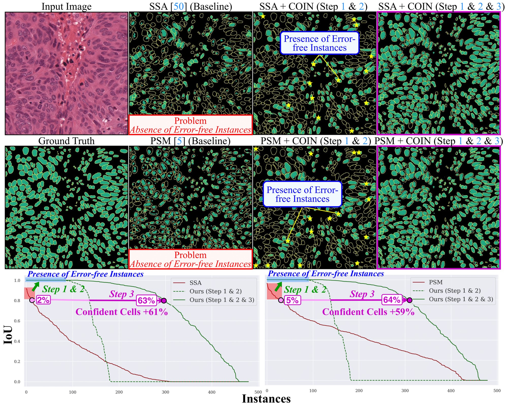
The Absence of Error-Free Instances. Recent unsupervised cell instance segmentation (UCIS) methods focus on the most discriminative parts of each cell, failing to recover full boundaries. As a result, no single predicted instance matches the ground truth exactly, making any naive self-distillation impossible.
If we cannot rely on any single instance, can we still identify the most confident ones? COIN scores every prediction, keeps only the highest-confidence subset as pseudo ground truth, and recursively self-distills, growing the confident set with each iteration.
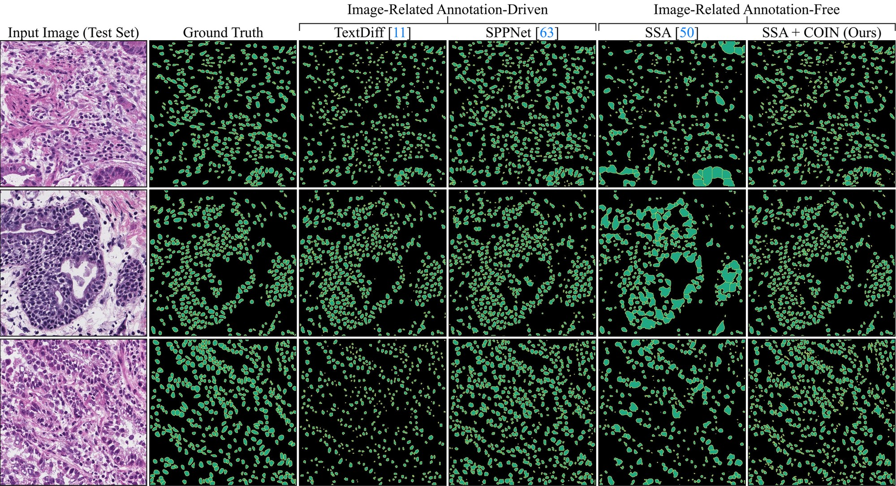
Annotation-Free, Yet Beats Supervised Baselines. Without any image-level or pixel-level annotations, COIN doubles SSA on MoNuSeg and improves PSM by at least +18 percentage points, outperforming semi- and weakly-supervised methods across six benchmarks.
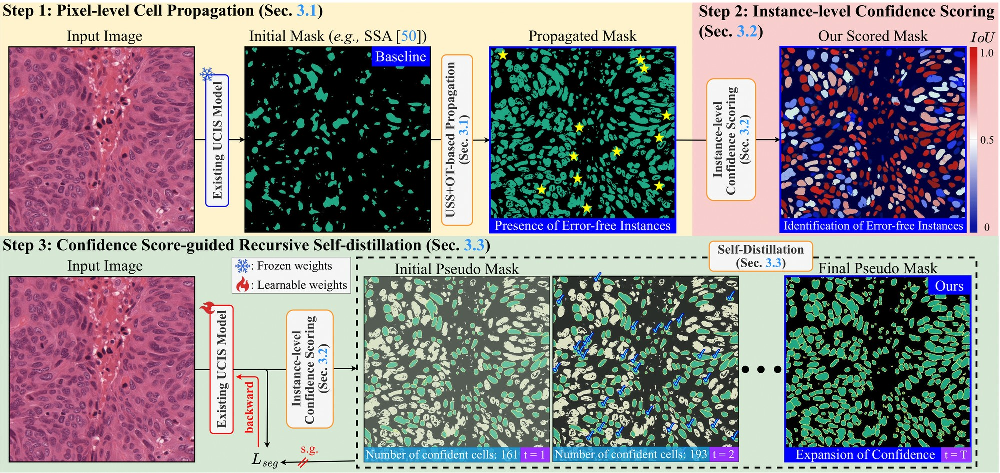
Three Steps, Zero Annotations. (1) Pixel-level cell propagation lifts sensitivity so that some predictions are guaranteed to be error-free. (2) Instance-level confidence scoring measures the agreement between each prediction and its refined mask, surfacing the most reliable instances. (3) Recursive self-distillation grows the confident set until convergence.
An unsupervised semantic segmentation (USS) module paired with optimal transport increases sensitivity to cell presence, ensuring that at least a subset of predicted instances are truly error-free and therefore usable as pseudo ground truth.
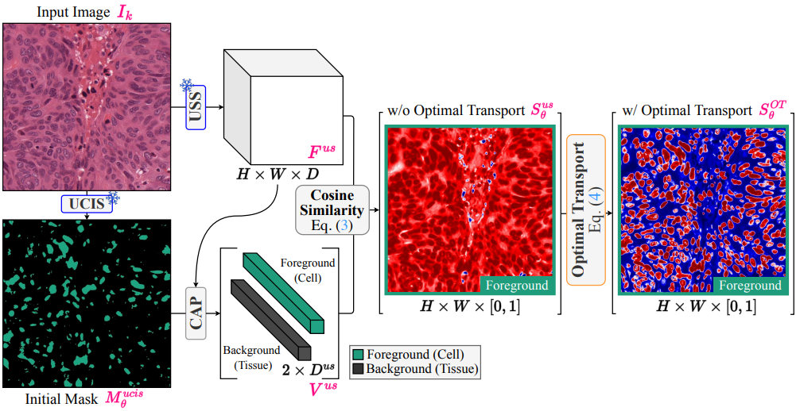
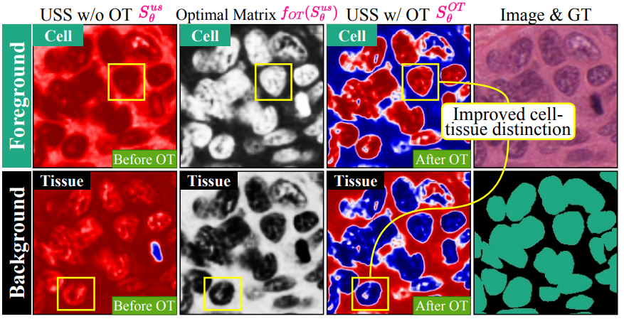
Optimal transport sharpens cell-tissue separation. Without OT, foreground predictions bleed into tissue; with OT, cell boundaries become crisp, producing a propagated mask that contains error-free instances.
Each predicted instance is re-segmented with SAM and re-scored by IoU consistency between the model output and the SAM-refined mask. High-scoring instances (e.g., 0.912) are accepted as pseudo ground truth; low-scoring ones (e.g., 0.002) are ignored or deferred to the next iteration.
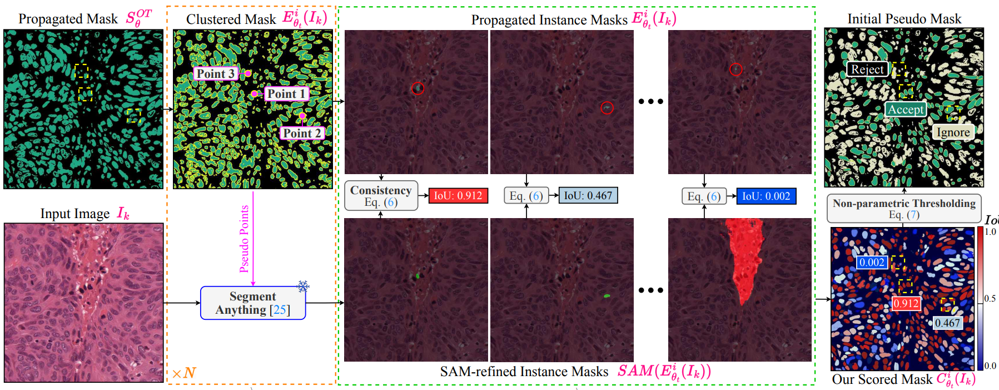
The model is retrained on the confident pseudo-GT subset, the scoring loop is re-run, and the confident set expands at every iteration (yellow arrows: existing confident instances; blue arrows: newly accepted instances at t=1, t=2). The loop converges to a model that beats supervised baselines without any annotation.
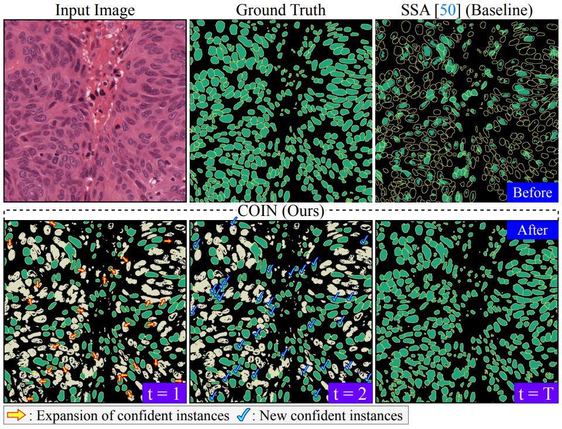
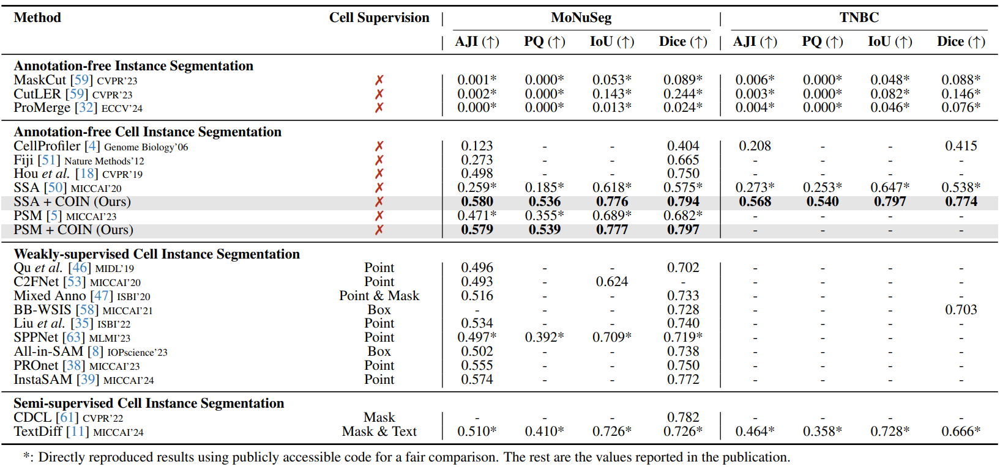
Main quantitative results on MoNuSeg and TNBC. Without any cell supervision, COIN outperforms not only every annotation-free baseline but also strong weakly-supervised (point/box) and semi-supervised competitors across AJI, PQ, IoU, and Dice.
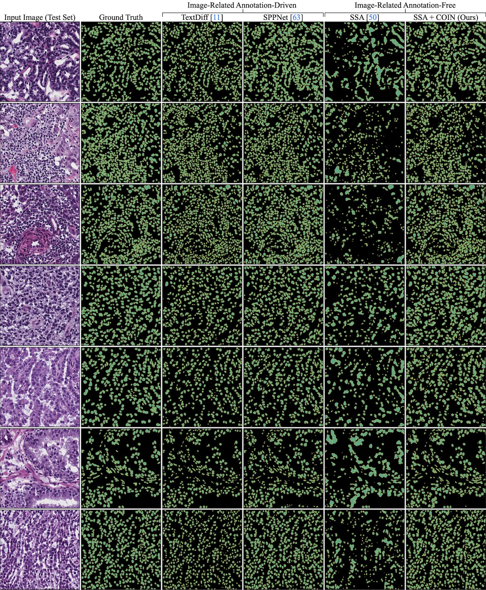
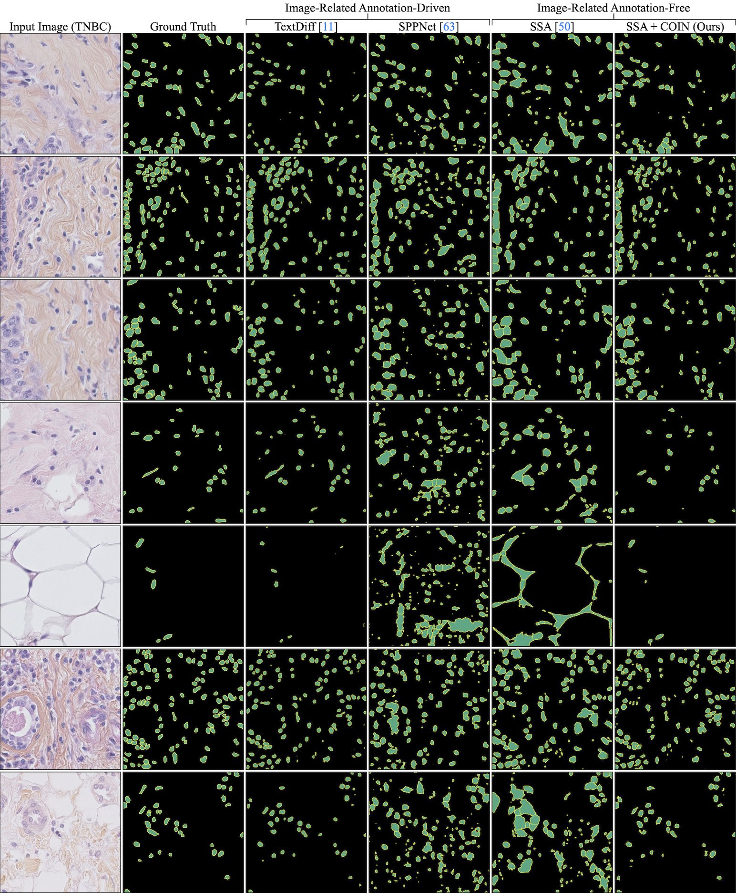
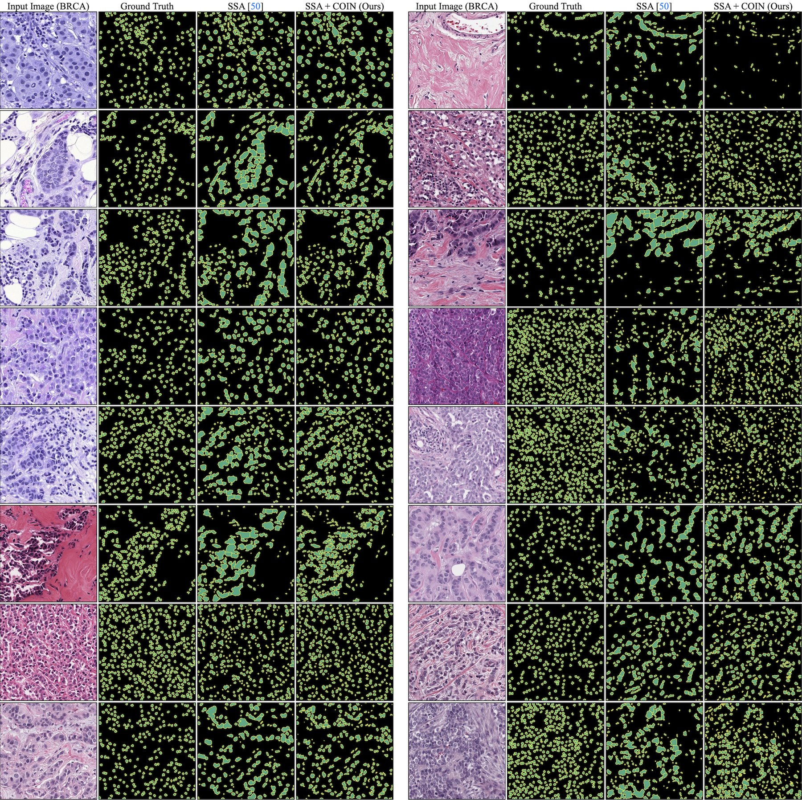
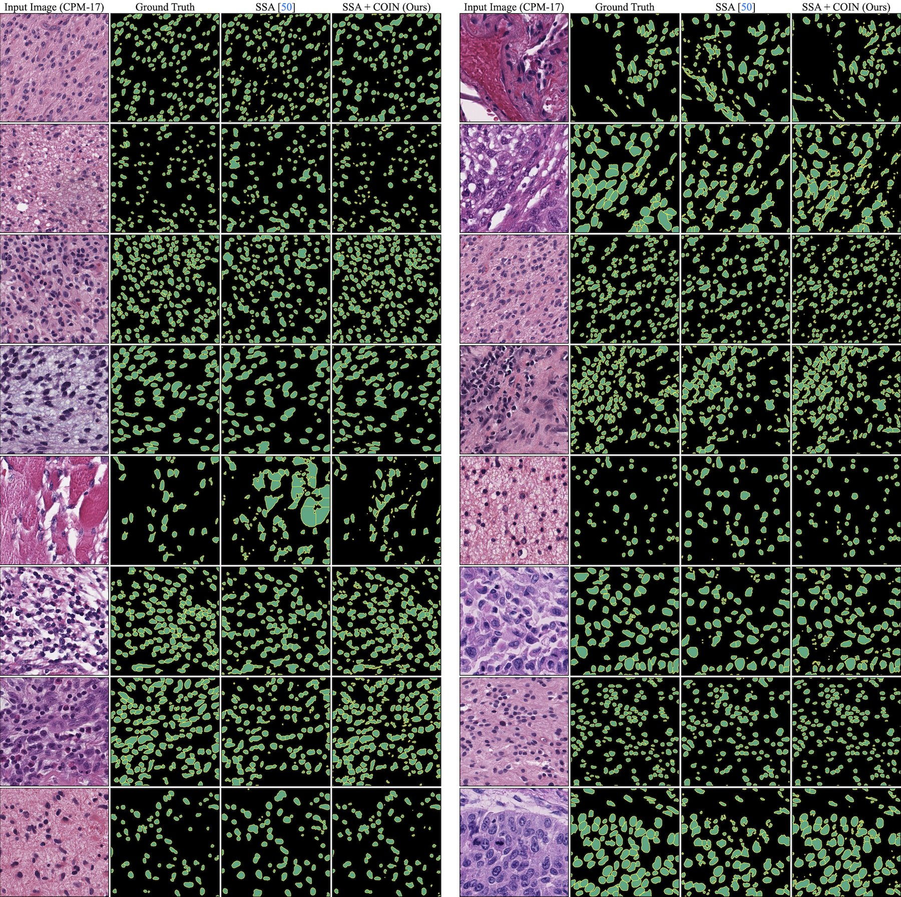
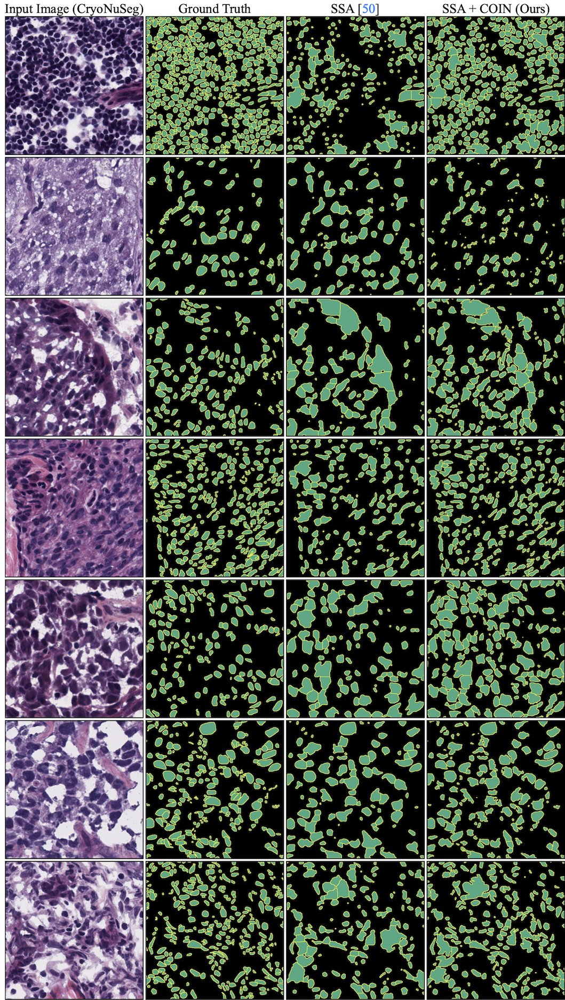
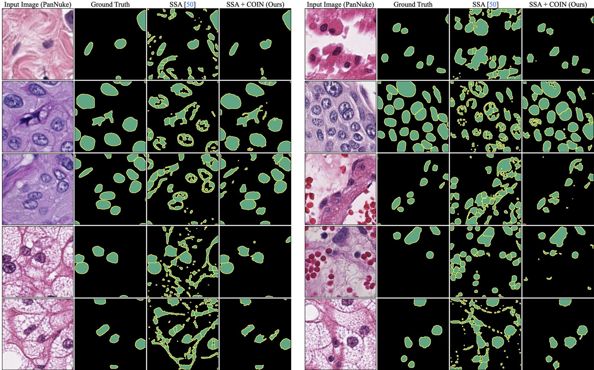
Annotation-Free Predictions vs. Supervised Baselines. COIN recovers complete cell instances across diverse tissue types and staining protocols, consistently outperforming both unsupervised and supervised competitors.
@InProceedings{Jo_2025_ICCV,
author = {Jo, Sanghyun and Lee, Seo Jin and Lee, Seungwoo and Hong, Seohyung and Seo, Hyungseok and Kim, Kyungsu},
title = {COIN: Confidence Score-Guided Distillation for Annotation-Free Cell Segmentation},
booktitle = {Proceedings of the IEEE/CVF International Conference on Computer Vision (ICCV)},
month = {October},
year = {2025},
pages = {20324-20335}
}